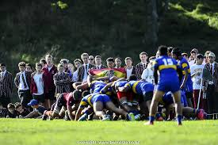

Otahuhu College opened in 1931 as the Otahuhu Junior High school, catering for form one to three students in 1933. It became known as the Otahuhu Technical High school, with a capacity to cate for student through to senior levels of study and also in 1947 it was renamed Otahuhu College. Otahuhu College is a secondary school in Auckland New Zealand for year 9 to 13. The principle for otahuhu College is Neil Watson and our deputy principle is Mr. Roberts for otahuhu college.

Otahuhu College, located in Auckland, New Zealand has a stronger rugby tradition and the involvement of the girls in rugby program at otahuhu college likely began with a combination of local interest, school, support and community engagement. The girls rugby team was established in 2000. This development was apart of a broader movement to increase opportunism for women and girls in rugby across New Zealand
| Team meeting every monday in Tblock @8:00 | Trainings every wednesday @4:00 | bring mouthgaruds/boots to training | captain and coaches meeting in T10 |
|---|